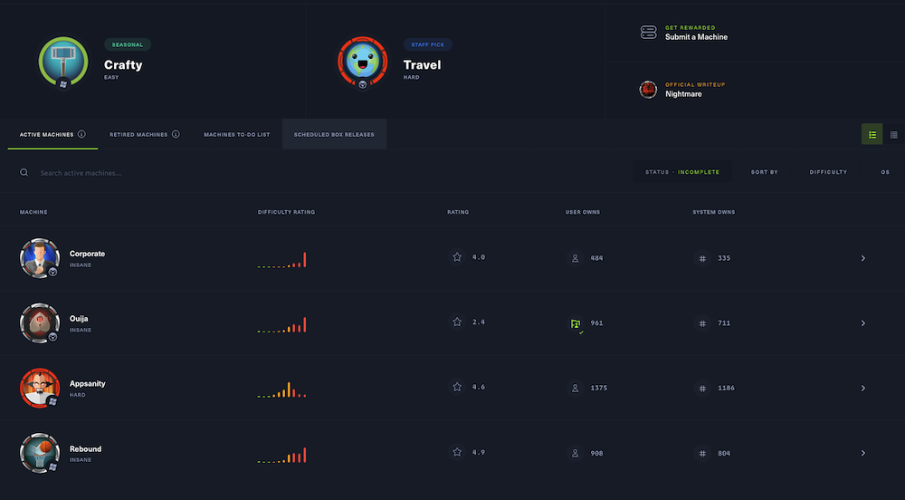

Hack The Box
Machines
Description
Machines are instances of vulnerable virtual machines. These are virtualized services, virtualized operating systems, and virtualized hardware that all run on our servers. Machines can be Easy, Medium, Hard or Insane and can host different Operating Systems; Linux, Windows, FreeBSD, and more.
Challenges
Description
Challenges are bite-sized applications for different pentesting techniques. These come in three main difficulties, specifically Easy, Medium, and Hard, as per the coloring of their entries on the list. Their scope? To be attacked by you.
Sherlocks
Description
Sherlocks is a meticulously crafted gamified environment that offers eight realistic investigation labs, each presenting different levels of difficulty and realistic scenarios. Through these labs, users can gain enhanced digital forensics and incident response (DFIR) capabilities, a deeper understanding of security tools and technologies, an improved ability to prioritize during real investigations, and proficiency in technical analysis. HTB's dedication to staying ahead of emerging threats and threat actor (TA) techniques ensures that Sherlocks will be a dynamic and valuable resource for cybersecurity teams seeking to fortify their defensive skills.